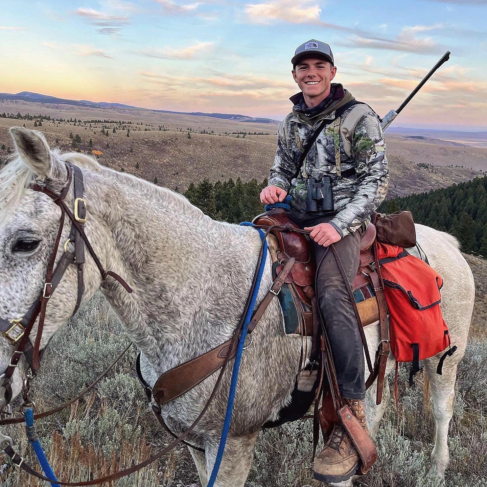
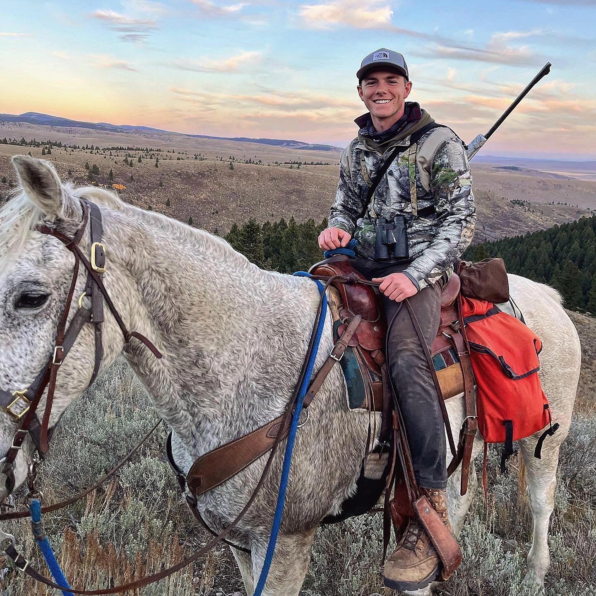

Braden Permann
321 N 400 W · Provo, UT 84601 · (208) 915-9094 ·
bradenpermann13@gmail.com
As a dedicated and consistent individual, I bring a strong work ethic developed through my experience growing up on a farm in Idaho, competing as an athlete, and serving a 2-year mission in Uruguay. Currently pursuing my studies at BYU, I am committed to excellence and personal growth in all areas of my life.
 
